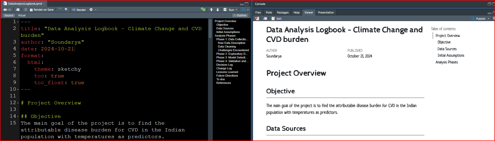
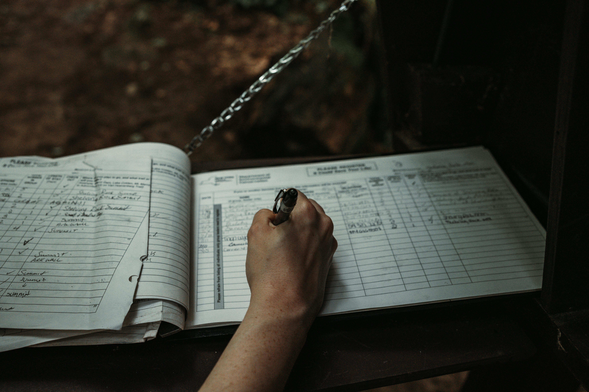

If a method can’t be followed, it’s as good as not shared
The Unspoken Pain of Non-Reproducibility
All these years, I have extensively discussed the importance of reproducibility in research, yet I have seldom highlighted the significant frustration and setbacks caused by non-reproducibility. Nick Milo refers to “info pain” as the overwhelming feeling of being inundated with too much information. In a similar vein, I describe “non-reproducibility pain” as a tangible and exasperating experience—one I recently encountered firsthand. This frustration underscores the very essence of reproducibility, illustrating why it is not merely a technicality in research, but a crucial aspect of scientific integrity.
A Real-Life Experience: The Splint That Couldn’t Be Used
My mom developed hallux valgus, or a deviated great toe, and we bought a splint for her. It came with an information booklet, but we couldn’t decipher how to use the product properly. All we saw was an assembled image of how it should be worn, but the information booklet only added to the confusion. It was filled with details that were difficult to follow in practice. The hinge on the splint kept moving when we tried it on her foot, and we weren’t sure whether the hinge should be on the side or above the toe. Finally, we gave up on the booklet and figured it out ourselves. Still, we had issues managing the straps, and after we thought we had everything set up, my mom complained of pain from the strap scraping her skin.
The Parallel to Research: When Methods Fail Us
This experience mirrors a common issue in research: the methods sections we write often fail to consider whether others can follow and replicate our procedures. Just as the splint’s instructions were unclear, leaving us frustrated, poorly written methods in research create barriers for others attempting to reproduce results. If we don’t keep the needs of the reader in mind—someone who may be unfamiliar with the work—it becomes nearly impossible for them to replicate the study. Ultimately, methods that are not accessible and explicit undermine the very purpose of sharing research.
The Need for Explicit Methods in Research
The primary goal of writing research papers is to allow others to learn from, build on, and replicate our work.
To achieve this, the methods section must be explicit—detailed enough that even someone new to the subject can understand and independently follow the procedure. Clarity in writing is crucial, not just in outlining the methods but also in documenting the analysis. Both aspects must be reproducible, ensuring that others—and even our future selves—can retrace the steps with precision. Without this level of transparency, the value of our research is diminished, as its core purpose—reproducibility—remains unmet.
Logbooks: A Simple Solution to a Complex Problem
A detailed logbook offers a simple yet powerful solution to the challenges of reproducibility. By documenting errors, solutions, and key decisions throughout the analysis, researchers create a comprehensive guide that makes it easier to retrace steps and replicate findings. > The process requires some mindful stops: periodically pausing to summarize the key points in the logbook, ensuring nothing crucial is overlooked.
This logbook can take many forms, from a basic text file (.txt) to more specialized formats like .rmd or Quarto files in R. Personally, I prefer a minimalist, handwritten logbook to clearly distinguish it from other analysis documents.

Before I write my methods section, I simply consult my logbook to recall the steps taken, the decisions made, and the rationale behind them. This practice not only enhances reproducibility but also serves as a valuable resource for future projects by us and others. By investing time in maintaining a logbook, we invest in the integrity and longevity of our research.
Writing for Others
Consider the First-Time Reader Just as the splint manufacturer likely intended for their product to be user-friendly, they failed to ensure that the instructions were clear for a first-time user. The booklet seemed written by someone already familiar with the product, overlooking the needs of new customers. A simple quality check—giving the instructions to someone unfamiliar with the splint—could have exposed its flaws. In the same way, when writing research logs and methods, we must always consider the perspective of those encountering the information for the first time. This ensures that our work is accessible and reproducible, which is critical to advancing science. Ultimately, reproducibility should always be the goal.
Research Isn’t Done Until It’s Reproducible!
